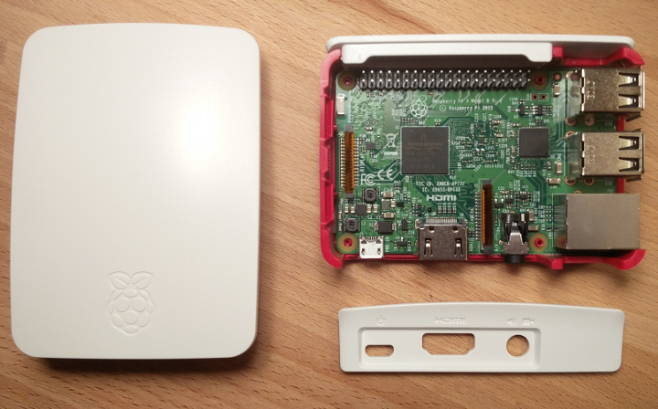

IoT Workshop - Rustfest Zürich 2017
This workshop will be a hands-on training for developing bare-metal and embedded Linux systems using Rust. You will use Tock-OS to create a low power Bluetooth sensor node on a Hail development board, and build a Smart IoT Gateway using a Raspberry Pi 3. Training and hardware will be provided for developing Rust software on both Microcontroller and Embedded Linux based systems. Attendees will start with a working base example for both devices, and can build new functionality from there. Some experience with Rust and either (or both) Microcontroller or Linux systems is recommended.
The Schedule
This workshop will be broken in to four major parts, each lasting about an hour with breaks:
- Introduction and Background Information
- Develop Microcontroller Software with TockOS
- Develop Gateway Software on Embedded Linux
- Additional Challenges and Free Work time
The Hardware
Today, we will be working with two pieces of hardware:
A Raspberry Pi 3 board, acting as an IoT Smart Gateway

A Tock OS Hail board, acting as a low power IoT device

The Speakers
James Munns is an Embedded Engineer who has worked on systems ranging from Safety Critical Avionics to Rapidly Prototyped IoT systems. During the day James works at Geeny in Berlin, developing frameworks and tools for IoT Embedded Developers.

Niklas Adolfsson is embedded software developer at Cybercom in Sweden. He received a B.S. degree at in Electrical at University of Borås and is currently pursing a MSc. in Computer Science at Chalmers University. He is also a contributor to Tock and has worked as a dependability engineer at SP Technical Research Institute of Sweden.

Development Environment Setup
NOTE: These steps are only necessary if you are not using the provided VM.
These were all steps necessary for setting up the Xubuntu 16.04 VM.
# Add repository for tock compiler
sudo add-apt-repository ppa:team-gcc-arm-embedded/ppa
sudo apt-get update
# Install all dependencies
sudo apt-get install -y \
ca-certificates \
cmake \
curl \
g++-arm-linux-gnueabihf \
gcc \
gcc-arm-embedded \
gedit \
git \
libc6-dev \
libc6-dev-armhf-cross \
make pkg-config \
mosquitto-client \
multistrap \
python3 \
python3-pip \
wget
# Patch multistrap
sudo sed -i "s/\$forceyes//g" /usr/sbin/multistrap
# Provide python
sudo ln -s /usr/bin/python3 /usr/bin/python
# Populate multistrap configuration
cat << EOF > ./multistrap.conf
[General]
arch=armhf
noauth=true
unpack=true
debootstrap=Debian
aptsources=Debian
[Debian]
source=http://ftp.debian.org/debian
suite=stable
packages=libdbus-1-dev libssl-dev openssl
EOF
# Perform multistrap setup
sudo multistrap -a armhf -d /raspi_stretch -f ./multistrap.conf
# Link a few dependencies to match compilation expectations
sudo ln -s /raspi_stretch/lib/arm-linux-gnueabihf/libsystemd.so.0 /raspi_stretch/lib/arm-linux-gnueabihf/libsystemd.so
sudo ln -s /raspi_stretch/usr/include/arm-linux-gnueabihf/openssl/opensslconf.h /raspi_stretch/usr/include/openssl/opensslconf.h
# Allow the SYSROOT to be seen/owned by the main user
sudo chown -R rustfest /raspi_stretch/
# Setup file used when cross compiling to the Raspberry Pi
cat << EOF > ~/pi-crossenv
# This is where we have installed our fake raspberry pi debian system
export SYSROOT=/raspi_stretch
export RPI_USR_LIB_DIR=${SYSROOT}/usr/lib/arm-linux-gnueabihf
export RPI_LIB_DIR=${SYSROOT}/lib/arm-linux-gnueabihf
# Inform Cargo and Rustc that we are cross compiling, as well as some configuration
# specific to our current use cases
export CARGO_TARGET_ARMV7_UNKNOWN_LINUX_GNUEABIHF_LINKER=arm-linux-gnueabihf-gcc
export CC_armv7_unknown_linux_gnueabihf=arm-linux-gnueabihf-gcc
export CXX_armv7_unknown_linux_gnueabihf=arm-linux-gnueabihf-g++
export OPENSSL_INCLUDE_DIR=/raspi_stretch/usr/include
export OPENSSL_LIB_DIR=/raspi_stretch/usr/lib/arm-linux-gnueabihf
export OPENSSL_DIR=/raspi_stretch/usr/lib/ssl
export PKG_CONFIG_PATH=${RPI_USR_LIB_DIR}/pkgconfig
export PKG_CONFIG_LIBDIR=${RPI_USR_LIB_DIR}/pkgconfig:/usr/share/pkgconfig
export PKG_CONFIG_SYSROOT_DIR=${SYSROOT}
export PKG_CONFIG_ALLOW_CROSS=1
export RUSTFLAGS="-L ${RPI_USR_LIB_DIR} -L ${RPI_LIB_DIR} -lsystemd"
EOF
# Install rust and friends
curl https://sh.rustup.rs -sSf | sh
rustup component add rust-src
rustup install nightly-2017-09-20
rustup target add armv7-unknown-linux-gnueabihf
cargo install xargo
Raspberry Pi Setup
This setup has already been done for you if you are attending the workshop. These steps are only necessary if you are replicating the setup at home.
The software on our Raspberry Pi is based on the 2017-09-07 version of the "Raspbian Stretch Lite" image, which can be found here.
Additionally, the following packages were installed via apt-get:
libssl-devlibdbus-1-dev
Tock OS Setup
All steps necessary for setting up the Tock OS environment are performed in the main environment setup. More information can be seen on the Official Tock Getting Started Guide.
The Internet of Things
What is the Internet of Things?
Generally, the Internet of Things covers devices that are now capable of communicating with other systems, either locally (like Bluetooth), or globally, via the Internet. People want to control items in the physical world similarly to how they are able to control and interconnect software
Where did it come from?
IoT has risen from two main sources:
- Industrial machinery that was "smart" before, but had little or no device to device connectivity
- Consumer devices, which are now cheap enough or resource efficient enough to include a networked component
As components used in devices like wireless routers and mobile phones have become more available, as well as cheaper, hardware developers have begun using them in other products, including IoT devices.
Around the same time, the maker movement, especially with the introduction of platforms like Arduino and the Raspberry Pi, have made embedded development much more accessible, both from a price perspective, as well as learning curve, and available resources.
We've now ended up with a new wave of embedded systems developers who are interested in the Internet of Things.
Why is Rust a good match for IoT?
Over the last 20 years or so, we've gotten okay at connecting computers to the Internet, as well as keeping them decently secure. This has happened through:
- Use of well known, actively developed components
- Healthy respect for security updates and patches
- Multiple layers of security, including isolation
- Sane defaults
- Memory safe languages (usually garbage collected)
- Willingness to trade some performance for better security
- Improved security implementation in hardware and software
However on IoT devices, especially low end or battery powered devices, most developers are forced to minimize overhead. Many embedded systems and software were never originally designed to be Internet connected, let alone publicly available.
Rust allows us to move lots of the safety checks from runtime to compile time, allowing us to avoid some of the most common security holes such as buffer overflows, use after frees, etc. that are very common in protocol and parser implementations.
Additionally, Rust ships with Cargo, the default build tool and package manager for Rust development, which allows easier reuse of code.
Because Rust is based on LLVM, we have either full or partial support for some of the most common hardware used in IoT today, including:
- ARM Cortex-A
- ARM Cortex-M
- MIPS
- x86[-64]
Architecture

Since IoT covers such a wide range of topics and devices, different approaches are needed to solve different problems
Direct Nodes
Direct Nodes are devices that are capable of connecting directly to the Internet, typically over WiFi, GSM/Cell, or Ethernet. Since these communication methods are relatively high-power, direct nodes tend to either be wall-powered, or if battery powered, they connect infrequently to save battery life.
These could include devices running Linux, like a Raspberry Pi, or high end microcontroller systems, like the ESP32.
Speaking a full "Internet Protocol", including components like SSL, IPv6, and more requires computational and memory resources that many device can't handle
Examples:
- Amazon Alexa
- Smart TVs and other Appliances
- Nest
Indirect Nodes
For devices where power or capabilities prevent direct Internet access, the next most common kind of IoT device connects to the Internet with assistance from a more powerful device.
This could mean the device is equipped to use a low power interface, such as Zigbee, Bluetooth, 6LoWPan, or Thread, which are designed to be power efficient, and were designed with low resource devices in mind.
For protocols like 6LoWPan or Thread, a simple "border router" which translates transparently from the low power protocol to full IP can be used. For protocols which are significantly different from IP, a Smart Hub/Gateway is typically used. Gateways typically require more "business logic" to determine how to correctly route messages.
Examples:
- Bluetooth Fitness Trackers
- Smart Light Bulbs
- Temperature Sensors
Border Routers and Gateways
As mentioned above, Border Routers and Gateways are used to assist connectivity of low power devices. Both of these devices share the same typical design:
- Wall powered
- Ethernet, Cell, or WiFi connectivity
- Low-power radios/interfaces (LPWAN, PAN) for communication with Indirect Nodes
For border routers, little additional functionality may be necessary, other than converting from 6LoWPan to IPv6. These device function similarly to WiFi routers: transparently connecting the devices to the Internet.
For gateways, it is typically necessary to understand the devices that will be connected. This could be as simple as mapping local protocol constructs like Services and Characteristics to some kind of IP construct, such as URIs/endpoints.
Both of these devices may also be a "Direct Node" themselves, while also providing Border Router or Gateway functionality.
- "Smart Hub"/"Smart Gateway" devices
- Thermostat that communicates with Temperature Sensors
- Raspberry Pi running Home Assistant
The Cloud
- A central point for all devices to connect
- Enables additional functionality, such as maintaining history, connecting dissimilar devices to each other
Typically speaks device-friendly protocols such as MQTT, CoAP, LWM2M, etc., as well as protocols useful for browsers and apps, such as REST, Websockets, etc.
Bluetooth Low Energy
Bluetooth Low Energy (BLE) was integrated into the Bluetooth 4.0 specification in 2010. BLE reduced the typical power consumption for devices compared to Bluetooth Classic (Bluetooth 3.x and below), and provided a framework (GATT) that allowed implementation of common functionality, as well as implementation specific functionality.
Bluetooth has not typically been thought of as an IoT-specific technology, however the prevalence of hardware due to commercially successful products, as well as usage in Laptops and Phones, means that the barrier to entry for consumers is reduced. Additionally, Bluetooth 5 (introduced 2016) introduces additional capabilities, including extended range, higher data throughput, and better coexistence (allowing more simultaneous devices), making it a better fit for IoT applications.
GATT
The Generic Attribute Profile, or GATT, defines a system for Central Clients (e.g. a Mobile Phone or Laptop) to discover and interact with Peripheral Servers (e.g. a Bluetooth Fitness Device).
Servers may provide a set of standard functionality to allow interoperability with many Central devices, as well as expose manufacturer specific functionality.
Clients and Servers
With BLE, the Server broadcasts information about itself, allowing Clients to discover the Server, as well as what capabilities the Server offers. Clients can choose to connect to the Server, in order to obtain additional information, or to establish a secure communication channel.
Services and Characteristics
Functionality of BLE are exposed via Characteristics, which are identified with a 128-bit UUID, such as 0000c01d-c001-de30-cabb-785feabcd123. These Characteristics are grouped into Services, which provide no functionality, but are a collection of related Characteristics. Services are also identified with a UUID, such as 00000001-c001-de30-cabb-785feabcd123.
An example of this grouping might look like this:
- Bluetooth Server Peripheral
- Service:
00000001-c001-de30-cabb-785feabcd123- Characteristic:
0000da7a-c001-de30-cabb-785feabcd123 - Characteristic:
0000c01d-c001-de30-cabb-785feabcd123 - Characteristic:
0000cafe-c001-de30-cabb-785feabcd123
- Characteristic:
- Service:
0f050001-3225-44b1-b97d-d3274acb29de- Characteristic:
0f050002-3225-44b1-b97d-d3274acb29de
- Characteristic:
- Service:
00001801-0000-1000-8000-00805f9b34fb- Characteristic:
00002a05-0000-1000-8000-00805f9b34fb
- Characteristic:
- Service:
When interacting with a BLE Server, all communication is made via Characteristics.
Standard Services
For common functionality standardized by the Bluetooth Special Interest Group (SIG), Services and Characteristics can be assigned a 16-bit Shorthand ID, which can be used instead of the full 128-bit UUID. The Bluetooth SIG maintains a list of defined Services and Characteristics.
In the example above, the Service 00001801-0000-1000-8000-00805f9b34fb is defined as a "Generic Attribute" service, which may be shortened as 0x1801. The Characteristic 00002a05-0000-1000-8000-00805f9b34fb is defined as "Service Changed", and may be shortened as 0x2a05.
Actions on Characteristics
There are specific actions which each Characteristic may or may not support. There are six main interactions:
Read
A Read is requested by the Client, and the Server retrieves the relevant data. Responses are limited to a single packet, typically about 20 bytes of data or less.
Write
A Write sends data to the Client, and the Server accepts the data. Writes are also limited to a single packet, typically about 20 bytes of data or less.
Long Read
Long Reads are a procedure of breaking a larger data transmission into multiple parts, with each part containing data and an offset.
Long Write
Long Writes are a procedure of breaking a larger data transmission into multiple parts, with each part containing data and an offset.
Notify
Rather than requiring a Client to poll a Read characteristic to obtain updated data, Bluetooth allows a Client to request a Server to Notify it whenever the data changes. The Bluetooth Server may then send data to all subscribed Clients asynchronously. Notify messages are also limited to the 20-byte data limit.
Notify is particularly useful for low power devices, as it does not require the Server to be continually listening for requests from the Client.
Indicate (subscribe w/ ACK)
Indicate is similar to Notify, however Indicate requires the Client to acknowledge the reception of the message.
MQTT and other IoT Protocols
For lightweight IoT devices, it can be difficult to implement protocols like HTTP commonly used in web applications, due to Memory, CPU, or Code Size limitations. Additionally, common behavior for IoT devices such as asynchronously sending updates or subscribing to updates of incoming data, are not well suited to traditional HTTP or REST APIs.
This has led to the development of protocols such as MQTT, CoAP, and LWM2M, which address the complexity concerns, as well as behavior mismatch concerns. These protocols are primarily designed for Machine to Machine (M2M) communication, as opposed to HTTP, which is typically used for presentation of human readable information.
As these protocols have become commonly used by lightweight IoT devices, they have also become commonly used by devices without constraints, for interoperability purposes.
MQTT
MQTT is an application protocol that operates over TCP/IP, and allows devices to Subscribe and Publish to Topics. Devices act as MQTT Clients, and connect to a central MQTT Broker, which manages connections and dispatches messages to all connected MQTT Clients.
Similarly to HTTP, MQTT can be used directly over TCP, or may be secured using SSL/TLS. When the TCP connection used to connect to the MQTT Broker is secured with SSL/TLS, it is referred to as MQTTS.
Topics
Topics are represented as UTF-8 strings, and are composed of one or more Topic Levels, separated by the / character. Some examples of topics could include:
home/james/kitchen/temperature/windowhome/james/kitchen/temperature/ovenhome/james/kitchen/brightness/windowhome/niklas/livingroom/temperature/couchhome/niklas/kitchen/brightness/windowoffice/geeny/kitchen/temperature/windowoffice/geeny/kitchen/temperature/table
Publishing
When an MQTT client would like to send data, it Publishes the data to a specific topic. The format of the payload, or data, is implementation defined, and is often either binary packed data (for size concerns), or JSON (for ease of use).
MQTT Clients do not talk directly to eachother, instead they send data to the MQTT Broker on a specific topic, which is broadcasted to all Clients which have subscribed to that topic.
For example, James' Kitchen Temperature Sensor might send the following information:
Topic: home/james/kitchen/temperature/window
Data:
{
"temperature_celsius": 22.0
}
Subscribing
When an MQTT client would like to receive data, it subscribes to a topic. When a message is sent from the Broker to the Client, it contains the Topic as well as the payload. Topics may be specific, such as home/james/kitchen/temperature/window, or may include wildcards.
Wildcards
There are two kinds of subscription wildcards, Single Level, and Multi level.
A single level wildcard is represented as a + character. The subscription request for home/+/kitchen/brightness/window would match:
home/james/kitchen/brightness/windowhome/niklas/kitchen/brightness/window
A multi level wildcard is represented as a # character. The subscription request for #/temperature/window would match:
home/james/kitchen/temperature/windowoffice/geeny/kitchen/temperature/window
These wildcards can be repeated and combined in a single subscription request. The subscription request for #/temperature/+ would match all of :
home/james/kitchen/temperature/windowhome/james/kitchen/temperature/ovenhome/niklas/livingroom/temperature/couchoffice/geeny/kitchen/temperature/windowoffice/geeny/kitchen/temperature/table
Quality of Service
MQTT allows for varying levels of guarantees regarding delivery of messages. There are three levels that can be chosen:
- QoS Level 0: At Most Once
- QoS Level 1: At Least Once
- QoS Level 2: Exactly Once
As the QoS level rises, so does the amount of overhead. QoS Level 0 message require no acknowledgement from the Broker, QoS Level 1 requires a single acknowledgement from the Broker, and QoS Level 2 requires a four part handshake before a message has completed sending.
For periodic messages, such as a regular temperature reading, it may not be necessary to confirm reception (since additional messages will be sent), so QoS 0 would be a good match. For important messages that do not have side effects if applied multiple times, such as a "stop motor" command, QoS Level 1 would be a good match. For messages that must be received exactly once, such as "increase temperature 5 degrees", QoS 2 should be used.
CoAP and other technologies
Other protocols have also been created to address many of the same topics addressed by MQTT. For example, CoAP was designed to operate similarly to how REST APIs work, with two major changes:
- UDP is used rather than TCP. This allows for reduced implementation requirements when compared to TCP.
- CoAP introduces a SUBSCRIBE verb, which allows for asynchronus updates
Cross Compilation
When developing software in a desktop or server context, the Target environment (where the software runs) is usually the same, or similar, to the Host environment (where the software is built/compiled). For interpreted languages, like Python, this is not a problem, as the local interpreter manages the differences. For compiled languages, it is necessary to have a compiler capable of running on the Host environment, but produce a binary usable on the Target environment.
For compilers like GCC, it is necessary to have a specific set of compiler tools built for the (Host, Target) set. Other compilers like LLVM (which Rust is built on top of), support multiple Targets with the same compiler.
Rust officially supports a number of platforms, with different levels of guaranteed functionality. A list of these platforms can be found in the official Rust Platform Documentation.
Triples
When talking about Hosts and Targets, we typically refer to each of them based on a "Triple", which is a short description of the CPU Architecture, the operating system, and any specific capabilities the platform supports. Definitions of triples vary a bit between LLVM and GCC, though we will mainly use the LLVM version.
A Host with an x86-64 CPU processor, running Linux, using glibc would have a triple of x86_64-unknown-linux-gnu (the "unknown" part here means there is no distribution specific assumptions made, and should work on any Linux system). If the Host were to use MUSL instead of glibc, it would have a triple of x86_64-unknown-linux-musl.
A target with an ARMv7 processor, running Linux, using glibc with hardware float support would have a triple of armv7-unknown-linux-gnueabihf.
Something Similar - ARMv7HF
When compiling for the Raspberry Pi, our Host and Target are generally similar. They are both running Linux, which abstracts away much of the low level interactions with the system. Rust and LLVM know how to compile code for the Raspberry Pi, however, compiling your code is only one part of the story.
What Rust can do, and what it can't
Rust Toolchains
When compiling your code, there are typically two "implicit" libraries used. core, and std.
core contains very low level abstractions for interacting with primitive types like u32 and i64, use of types like str and slices, Result and Option types, and more.
std contains higher level functionality, such as Heap allocated datatypes including String and Vec, collections like HashMap and BTree, threads, and even macros like println!().
Instead of compiling components from core and std on every build, these components are generated as pre-built libraries, and linked into your application as necessary to save time. These components, when put together are called a toolchain.
In order to compile for a target, you will need to obtain a toolchain for that target. The toolchain is only specific to the target, so different hosts can use the same target toolchain.
If you have installed Rust using rustup, adding a an officially supported target is as simple as:
rustup target add armv7-unknown-linux-gnueabihf
Linking
Currently, Rust does not use LLVM's linker, called lld. There is current work to change this, but it is still a work in progress. In the meantime, Rust uses the GCC linker, ld. Unfortunately as mentioned above, GCC tools (including ld) are specfic to a set of (Host and Target). This means it is necessary to install a GCC toolchain for the Host and Target for your cross compilation.
Not every crate is pure, statically linked Rust!
Some crates are used for wrapping existing C or C++ libraries. When compiling these crates, it is necessary to have a C/C++ compiler for the core of those libraries.
Other crates are used for wrapping Dynamically Linked Libraries, like OpenSSL or DBus. Care must be taken when compiling these libraries that the Host Environment and the Target Environment match, or the host is properly configured for the target.
Something Different - ARM Cortex-M
Cross compiling for embedded targets, like our Hail board, is a bit different.
std vs core
For embedded
xargo - building core from scratch
cross + xargo
- pain free embedded compilation
Raspberry Pi and Embedded Linux
Typical way of generating firmware
What we're doing
The Hail Board and Tock OS
Introduction and Overview
Architecture
Kernel
Capsule
Process
Tock OS Work
- Print to console
- Read from environmental sensors
- Toggle LEDs
- Bluetooth
Useful items:
- nRF Connect application
- https://play.google.com/store/apps/details?id=no.nordicsemi.android.mcp&hl=en
- https://itunes.apple.com/de/app/nrf-connect/id1054362403?mt=8
Hello, World!
A little setup
Having trouble with the setup? Don't hesitate to ask for help!
Open up the VM, make yourself comfortable. Sorry for the en-us environment and keyboard.
You can choose to either interact with the graphic environment, or you can SSH into the virtual machine. If you want to SSH, don't forget to foreward the port from host to the virtual machine. SSH is served up on the VM's port 22.
- Username:
rustfest - Password:
rustfest
Now would also be a good time to add your SSH public key to the VM's ~/.ssh/authorized_keys, and add an entry into your SSH config ~/.ssh/config that looks like this:
host rustfest
Hostname localhost
User rustfest
IdentityFile /home/$YOU/.ssh/id_rsa
Port $MAPPED_PORT
This will save you some typing, but is completely optional.
Hello, Host!
Lets make a new project
cargo new --bin hello-raspberry
cd hello-raspberry
Now lets compile and run it here
cargo build
cargo run
You should get something like this:
rustfest@rustfest-2017:~/hello-raspberry$ cargo build
Compiling hello-raspberry v0.1.0 (file:///home/rustfest/hello-raspberry)
Finished dev [unoptimized + debuginfo] target(s) in 0.74 secs
rustfest@rustfest-2017:~/hello-raspberry$ cargo run
Finished dev [unoptimized + debuginfo] target(s) in 0.0 secs
Running `target/debug/hello-raspberry`
Hello, world!
Lets look a bit closer at what we've done. We can use the file command to see what type of executable we've generated, and the ldd command to see what dynamic libraries we link to:
file target/debug/hello-raspberry
ldd target/debug/hello-raspberry
Hello, Target!
Now lets build for the Raspberry Pi. Remember, the target triple we want here is armv7-unknown-linux-gnueabihf. This is normally done like this:
cargo build --target armv7-unknown-linux-gnueabihf
Give it a try!
Back yet?
Yeah, it didn't work. We haven't given Cargo enough information. Lets check out the file ~/pi-crossenv. Print it out with this command:
cat ~/pi-crossenv
These are the important lines (for now):
export CARGO_TARGET_ARMV7_UNKNOWN_LINUX_GNUEABIHF_LINKER=arm-linux-gnueabihf-gcc
export CC_armv7_unknown_linux_gnueabihf=arm-linux-gnueabihf-gcc
export CXX_armv7_unknown_linux_gnueabihf=arm-linux-gnueabihf-g++
These lines tell Cargo what C Compiler, C++ Compiler, and Linker to use when compiling for the armv7-unknown-linux-gnueabihf target.
Lets add these variables to our environment with the source command.
source ~/pi-crossenv
Now we can retry cross compiling.
cargo build --target armv7-unknown-linux-gnueabihf
This time you should see something like this:
rustfest@rustfest-2017:~/hello-raspberry$ cargo build --target armv7-unknown-linux-gnueabihf
Compiling hello-raspberry v0.1.0 (file:///home/rustfest/hello-raspberry)
Finished dev [unoptimized + debuginfo] target(s) in 0.70 secs
Lets check out the generated binary with file:
file target/armv7-unknown-linux-gnueabihf/debug/hello-raspberry
How does that look compared to our other binary?
Hello, Raspberry
Now, lets log on to your Raspberry Pi. There are only 5 of them, so you might have to share.
You should have gotten the IP address of your Raspberry Pi on a post-it note. Lets login, and create a directory for you to work in.
- Username:
pi - Password:
internetofthings
ssh pi@<IP ADDRESS>
mkdir <YOUR NAME>
Now you should be able to send the file to your Raspberry Pi. From the VM:
scp \
target/armv7-unknown-linux-gnueabihf/debug/hello-raspberry \
pi@<IP ADDRESS>:/home/pi/<YOUR NAME>
Finally, we should be able to log in, and run our application!
ssh pi@<IP ADDRESS>
cd <YOUR NAME>
./hello-raspberry
If it all worked, you should see something like this:
pi@raspberrypi:~/james $ ./hello-raspberry
Hello, world!
Talking with Bluetooth
Before we get started, you'll need a Tock board. On the bottom, there should be a sticker with a MAC address that looks like AA:BB:CC:DD:EE:FF. We'll need this later.
If you're using the default Tock firmware, you'll also need to know the Service and Characteristics you want to interact with. These are probably:
- Service:
00001801-0000-1000-8000-00805f9b34fb- Characteristic:
00002a05-0000-1000-8000-00805f9b34fb
- Characteristic:
To start off, we'll be using a crate called easy-bluez, which exposes the ability to read and write to Bluetooth Low Energy devices. This crate automatically handles the scanning, connection, and polling of the characteristics of your choosing. Under the hood, easy-bluez uses a crate called blurz to interact with Linux's BlueZ service over dbus.
A quick reminder
There were some other lines in ~/pi-crossenv that we skipped over, particularly:
export SYSROOT=/raspi_stretch
export RPI_USR_LIB_DIR=${SYSROOT}/usr/lib/arm-linux-gnueabihf
export RPI_LIB_DIR=${SYSROOT}/lib/arm-linux-gnueabihf
export PKG_CONFIG_PATH=${RPI_USR_LIB_DIR}/pkgconfig
export PKG_CONFIG_LIBDIR=${RPI_USR_LIB_DIR}/pkgconfig:/usr/share/pkgconfig
export PKG_CONFIG_SYSROOT_DIR=${SYSROOT}
export PKG_CONFIG_ALLOW_CROSS=1
export RUSTFLAGS="-L ${RPI_USR_LIB_DIR} -L ${RPI_LIB_DIR} -lsystemd"
Since easy-bluez uses DBus under the hood to talk to BlueZ, it is necessary to dynamically link to libdbus-1, and its dependencies. Since we want to make sure that our cross compilation environment matches our target, we've set up a SYSROOT at /raspi_stretch. This is a simulated version of the root filesystem found on our Raspberry Pis. This was populated using a tool called multistrap, which installs debian packages from other architectures to a specified location.
These environment variables instruct Cargo where to look for dynamically linked libraries, which are checked at compile time.
Set up easy-bluez
Lets set up a new project inside the VM
cd ~
cargo new --bin hello-bluetooth
cd hello-bluetooth
Now, lets add easy-bluez as a dependency, and make sure everything still builds. Add these lines to your Cargo.toml:
[dependencies]
easy-bluez = "0.1"
In your src/main.rs, add these lines:
extern crate easy_bluez; use easy_bluez::EasyBluez; fn main() { println!("Hello, world!"); }
Now we're ready to compile! Don't forget to source ~/pi-crossenv if you've closed your window. After a bit of compiling, you should see something like this:
...
Compiling hello-bluetooth v0.1.0 (file:///home/rustfest/hello-bluetooth)
warning: unused import: `easy_bluez::EasyBluez`
--> src/main.rs:2:5
|
2 | use easy_bluez::EasyBluez;
| ^^^^^^^^^^^^^^^^^^^^^
|
= note: #[warn(unused_imports)] on by default
Finished dev [unoptimized + debuginfo] target(s) in 59.69 secs
rustfest@rustfest-2017:~/hello-bluetooth$
If you don't see something like this, ask for help!
Read from your Hail board
Okay, lets actually read from your device. easy-bluez has a method called poll, which you can use like this:
extern crate easy_bluez; use easy_bluez::EasyBluez; fn main() { let ez = EasyBluez::new().run(); let rx_poll = ez.poll( "CF:75:CE:86:6D:02", // MAC Address "00000001-c001-de30-cabb-785feabcd123", // Service "0000c01d-c001-de30-cabb-785feabcd123", // Characteristic ).expect("Bad data!"); // Blocking wait for a message to be received if let Ok(msg) = rx_poll.recv() { println!("{:?}", msg); } }
poll returns a Result<Receiver<Box<[u8]>>>, which will provide you with a stream of data obtained from the device, exposed as heap-allocated arrays of bytes.
Try building this code, and running it on your Raspberry Pi. As a note, sudo is required to interact with BlueZ, so you will need to run your binary with sudo ./hello-bluetooth. Don't forget to use your MAC Address, Service, and Characteristic!
Once you are able to read a single message, check out the documentation for Receiver
Write to your Hail board
easy-bluez has another method called writeable(), which can be used like this:
extern crate easy_bluez; use easy_bluez::EasyBluez; use std::time::Duration; use std::thread::sleep; fn main() { let ez = EasyBluez::new().run(); let tx_write = ez.writeable( "CF:75:CE:86:6D:02", // MAC Address "00000001-c001-de30-cabb-785feabcd123", // Service "0000da7a-c001-de30-cabb-785feabcd123", // Characteristic ).expect("Bad data!"); // Send a single message to the device tx_write.send(Box::new([0x00])).unwrap(); // Sleep for a bit to prevent returning before the message is sent sleep(Duration::from_secs(1)); }
Try building this code, and running on your Raspberry Pi.
Putting it together
Once you have reading and writing working, try combining them!
For example, you could:
- Write a message every 4th receive
- Send messages at a fixed interval, while processing all incoming messages
Talking to the Cloud
It's time to start talking with the Internet! For this exercise, we will be using a publicly available MQTT Broker provided by Hive MQ to demonstrate some basic functionality. We'll be using a library called rumqtt to communicate as an MQTT Client.
Lets make a new project, and add rumqtt to it. In your Virtual Machine:
cargo new --bin hello-mqtt
In your Cargo.toml:
[dependencies]
rumqtt = "0.10"
In your src/main.rs
extern crate rumqtt;
Interact over MQTT
For easy debugging, we'll use HiveMQ's Live Dashboard. You can open a browser window here, and press "Connect". You will be able to add subscription topics, as well as send messages to topics.
You will be able to connect to the same server using rumqtt, and see all messages sent back and forth
WARNING: This is a publically used server, and is typically very busy with people sending all kinds of junk (and non-junk) data. Be careful when subscribing to wildcard topics with either
+or#. I suggest using a path something like:
rustfest/YOUR_NAME/foo/bar
Sending Messages
We'll start off with sending messages. Here is an example of connecting to the broker mentioned above, and sending a single message. You should see the message appear in the Live Dashboard window.
extern crate rumqtt; use std::time::Duration; use std::thread::sleep; fn main() { let opts = rumqtt::MqttOptions::new() .set_broker("broker.mqttdashboard.com:1883") .set_client_id("demo-mqtt") .set_keep_alive(5) .set_reconnect(10); let mut client = rumqtt::MqttClient::start(opts, None).unwrap(); client .publish( "rustfest/james/demo", rumqtt::QoS::Level0, String::from("Hello, MQTT!").into_bytes(), ).unwrap(); // Give time for the message to be sent sleep(Duration::from_secs(3)); }
Receiving Messages
Here is an example which allows you to listen incoming messages for 30 seconds. After starting this client, you should be able to send messages from the Live Dashboard, and have them appear on your client.
extern crate rumqtt; use std::time::Duration; use std::thread::sleep; fn main() { // Configure the client let opts = rumqtt::MqttOptions::new() .set_broker("broker.mqttdashboard.com:1883") .set_client_id("james-demo-mqtt") .set_keep_alive(5) .set_reconnect(10); // Provide a callback for all incoming messages let msg_handler = rumqtt::MqttCallback::new().on_message(|message| { println!("- Topic: {}\n Message: {}", message.topic.to_string(), String::from_utf8_lossy(message.payload.as_ref()) ); }); // Start the client let mut client = rumqtt::MqttClient::start(opts, Some(msg_handler)).unwrap(); // Subscribe to topics client.subscribe(vec![("rustfest/#", rumqtt::QoS::Level0)]).unwrap(); // Give time for the message(s) to arrive sleep(Duration::from_secs(30)); }
A quick note about security
In this demo we are using MQTT, rather than MQTTS. This is mainly due to the fact that the demonstration broker we are using does not support MQTTS.
It is always recommended to use SSL when possible, otherwise, all data and login credentials are sent and received in plain text. When using SSL, you can make the following changes to the client configuration:
# #![allow(unused_variables)] #fn main() { let opts = rumqtt::MqttOptions::new() // Port 8883 is typically MQTTS .set_broker("broker.mqttdashboard.com:8883") // What certificates to validate the server with .set_ca("/etc/ssl/certs/ca-certificates.crt") // Force verification of the certificates .set_should_verify_ca(true) // Same as above .set_client_id("demo-mqtt") .set_keep_alive(5) .set_reconnect(10); #}
Put it together
Try creating a client that responds to all incoming messages on the same topic.
If you have time, try sending and receiving data formatted as JSON using Serde JSON
Putting it together
As we're getting to the end of the guided period, there are a few tasks to try out without much guidance.
Give them a try, and feel free to ask for help if you need it!
Task One: Transparent Protocol Converter
For our Tock board, we would like to send all information received from the Environmental Sense Characteristic over MQTT. Additionally, we would like to take specific messages received over MQTT, and forward them to the LED control characteristic.
Task Two: More than one Tock
Repeat the steps of Task One, however support 2 or more Tock boards at the same time. When sending messages over MQTT, make sure that it is possible to determine where the messages came from. When receiving messages from MQTT, make sure that only the correct Tock device receives the message you sent.